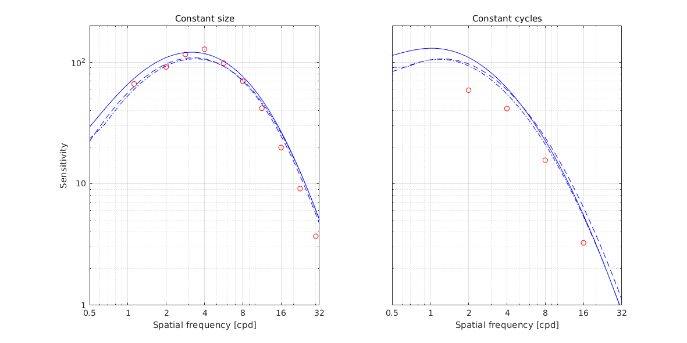
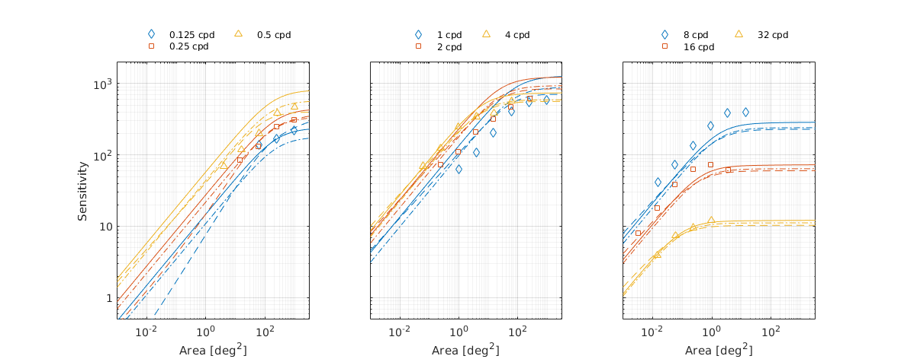
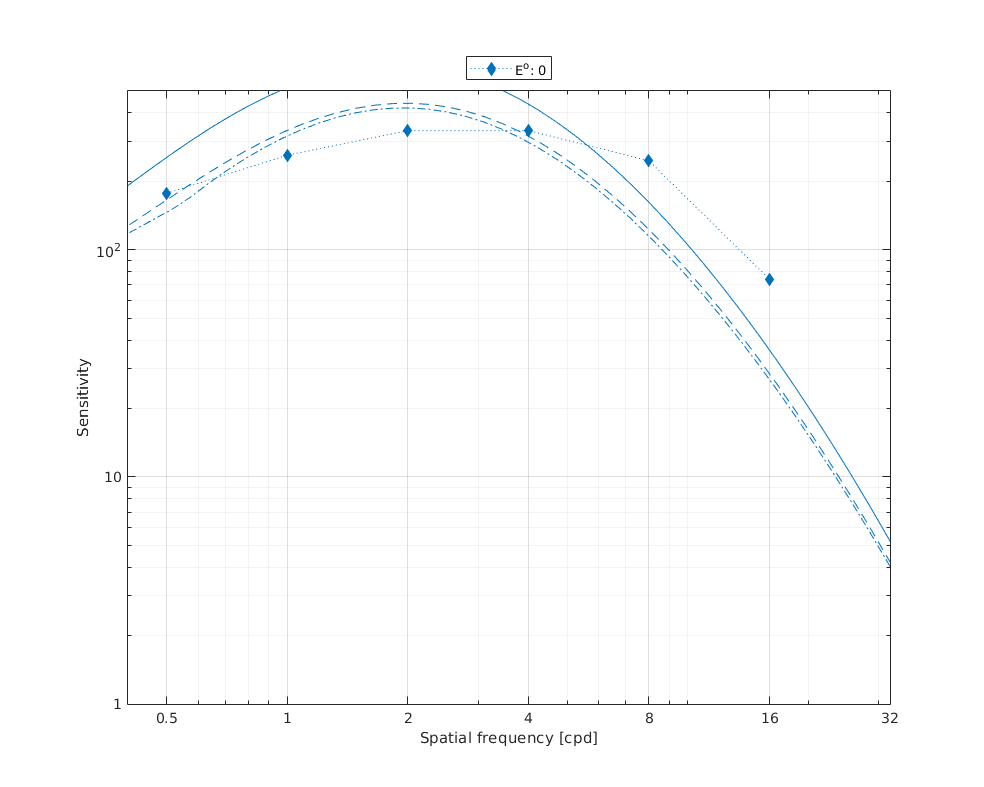
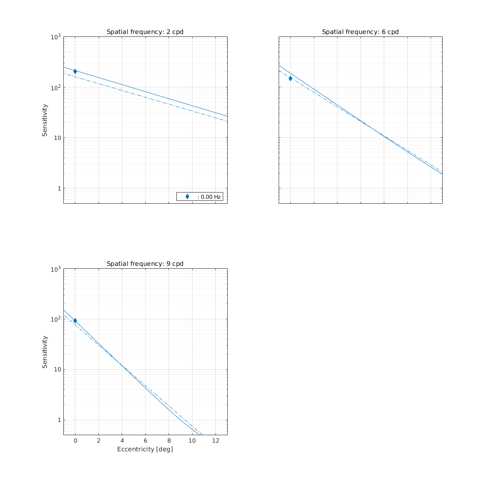
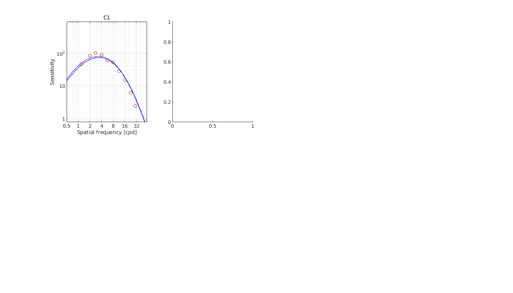
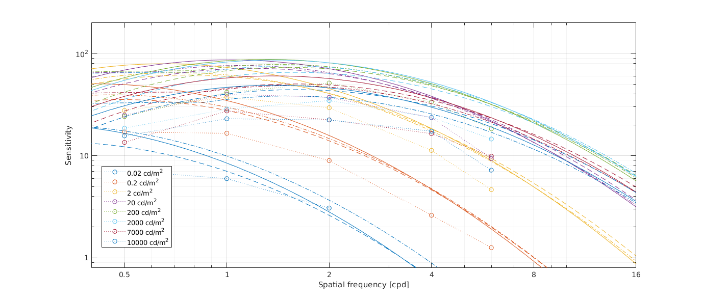
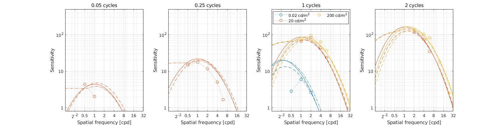
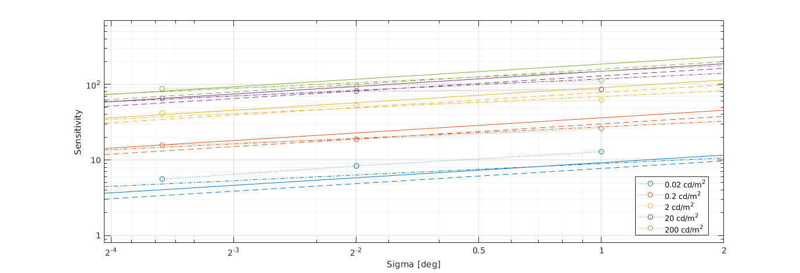

Fitting of spatial CSF Gabor and Disc datasets
Fitting error
Model comparison statistics
We use AIC and F-test to test whether the difference in fitting error is statistically significant at alpha=0.05 level. Both statistical metrics take the number of optimized parameters into account.
F-test: For F-test, we compare the fitting results from caslteCSF with those of other models. The F-static is calculated using the residual sum of squares and degrees of freedom (number of data points - number of optimized parameters) from both models. The corresponding p-value indicates whether or not the null hypothesis is rejected, where H0: the castleCSF does not provide significant better fit than the other model. The p-values less than 0.05 indicates that castleCSF provides a better fit to the data at the significance level of 0.05 (marked with ✓). We performed the F-test for all individual datasets as well as for all datasets combined. For smaller datasets, where the number of data points are comparable to the number of model parameters, F-test can not provide any results since it indicates there is more variance within the models' fits than between.
AIC: Akaike information criterion is a statistical estimator of prediction error and relative quality of the models, which accounts for the number of parameters of each model.
The model with the lower AIC score is considered to be better and with a good balance of error value and the number of parameters.
The sensitivity adjustment column contains a multiplier that is used to adjust the sensitivity of each datasets. It corresponds to sd in the paper (Eq. 18).
Model parameters
castleCSF-jov
M_lms2acc =
1.0000 1.0000 0
1.0000 -2.1515 0
-1.0000 -1.0000 49.9340
p.rg.sigma_sust = 16.541;
p.rg.beta_sust = 1.15549;
p.rg.ch_sust.S_max = [ 1317.78 0.342018 0.367998 ];
p.rg.ch_sust.f_max = 0.122965;
p.rg.ch_sust.bw = 0.424147;
p.rg.A_0 = 256.928;
p.rg.f_0 = 32.4658;
p.rg.ecc_drop = 0.0591431;
p.rg.ecc_drop_nasal = 2.89648e-05;
p.rg.ecc_drop_f = 2.04986e-69;
p.rg.ecc_drop_f_nasal = 0.180118;
p.yv.sigma_sust = 7.9187;
p.yv.beta_sust = 0.999363;
p.yv.ch_sust.S_max = [ 64.1982 62.9917 0.411333 ];
p.yv.ch_sust.f_max = 0.00220293;
p.yv.ch_sust.bw = 0.532509;
p.yv.A_0 = 2.81672e+07;
p.yv.f_0 = 0.000630084;
p.yv.ecc_drop = 0.00357397;
p.yv.ecc_drop_nasal = 5.85804e-141;
p.yv.ecc_drop_f = 0.0080878;
p.yv.ecc_drop_f_nasal = 0.0147658;
p.ach.ach_sust.S_max = [ 77.1236 0.470503 0.429523 4.22703e-07 1.92855e+10 ];
p.ach.ach_sust.f_max = [ 1.3741 58.8829 0.226072 ];
p.ach.ach_sust.bw = 0.000206379;
p.ach.ach_sust.a = 9.62791e+14;
p.ach.ach_sust.A_0 = 5.85361;
p.ach.ach_sust.f_0 = 4.20042;
p.ach.ach_trans.S_max = [ 0.262965 2084.81 ];
p.ach.ach_trans.f_max = 0.000275027;
p.ach.ach_trans.bw = 1.18228;
p.ach.ach_trans.a = 0.000241177;
p.ach.ach_trans.A_0 = 2.18495;
p.ach.ach_trans.f_0 = 2.76283;
p.ach.sigma_trans = 0.0246245;
p.ach.sigma_sust = 10.467;
p.ach.omega_trans_sl = 25.249;
p.ach.omega_trans_c = 0.692533;
p.ach.ecc_drop = 0.0259781;
p.ach.ecc_drop_nasal = 0.0452708;
p.ach.ecc_drop_f = 0.0217926;
p.ach.ecc_drop_f_nasal = 0.0068348;
p.colmat = [ 2.15154 0 0 49.934 ];
Parameters for Ach component:
p.ach_sust.S_max = [ 77.1236 0.470503 0.429523 4.22703e-07 1.92855e+10 ];
p.ach_sust.f_max = [ 1.3741 58.8829 0.226072 ];
p.ach_sust.bw = 0.000206379;
p.ach_sust.a = 9.62791e+14;
p.ach_trans.S_max = [ 0.262965 2084.81 ];
p.ach_trans.f_max = 0.000275027;
p.ach_trans.bw = 1.18228;
p.ach_trans.a = 0.000241177;
p.ach_trans.A_0 = 2.18495;
p.ach_trans.f_0 = 2.76283;
p.sigma_trans = 0.0246245;
p.sigma_sust = 10.467;
p.omega_trans_sl = 25.249;
p.omega_trans_c = 0.692533;
p.ecc_drop = 0.0259781;
p.ecc_drop_nasal = 0.0452708;
p.ecc_drop_f = 0.0217926;
p.ecc_drop_f_nasal = 0.0068348;
Parameters for RG component:
p.ch_sust.S_max = [ 1317.78 0.342018 0.367998 ];
p.ch_sust.f_max = 0.122965;
p.ch_sust.bw = 0.424147;
p.A_0 = 256.928;
p.f_0 = 32.4658;
p.sigma_sust = 16.541;
p.beta_sust = 1.15549;
p.ecc_drop = 0.0591431;
p.ecc_drop_nasal = 2.89648e-05;
p.ecc_drop_f = 2.04986e-69;
p.ecc_drop_f_nasal = 0.180118;
Parameters for YV component:
p.ch_sust.S_max = [ 64.1982 62.9917 0.411333 ];
p.ch_sust.f_max = 0.00220293;
p.ch_sust.bw = 0.532509;
p.A_0 = 2.81672e+07;
p.f_0 = 0.000630084;
p.sigma_sust = 7.9187;
p.beta_sust = 0.999363;
p.ecc_drop = 0.00357397;
p.ecc_drop_nasal = 5.85804e-141;
p.ecc_drop_f = 0.0080878;
p.ecc_drop_f_nasal = 0.0147658;
original Barten's spatiotemporal veridical CSF
p.k = 7.50783;
p.eta0 = 0.0540745;
p.sigma0 = 0.268369;
p.eg = 3.3;
p.u00 = 3.34419;
p.Phi00 = 3e-08;
p.T = 0.0632125;
p.Xmax0 = 15.0242;
p.Nmax = 5.85972;
p.tau10 = 0.032;
p.tau20 = 0.018;
p.n1 = 7;
p.n2 = 4;
VDP CSF
p.P = 154.194;
p.ob = 1.3868;
p.k = 0.24;
p.epsilon = 1.11381;
p.a_l_m = 2.91073;
p.b_l_m = 78.1072;
csf-jov
p.ach.S_max = [ 2.84078 1.34534 41.84 ];
p.ach.f_max = [ 227448 64.5407 305.751 ];
p.ach.bw = 1.56902;
p.ach.Ac_prime = 116.028;
p.ach.f_0 = 5.38583;
p.ach.gamma = 0.90634;
p.rg.S_max = [ 2.90539 3.04331 38.6588 ];
p.rg.f_max = [ 0.0686226 3.04969e-24 ];
p.rg.bw = 1.21802;
p.rg.Ac_prime = 18.6192;
p.rg.f_0 = 0.65;
p.rg.gamma = 1.24219;
p.yv.S_max = [ 2.19857 3.04952 23.8802 ];
p.yv.f_max = 0.121887;
p.yv.bw = 2.91534;
p.yv.Ac_prime = 2.12076;
p.yv.f_0 = 0.65;
p.yv.gamma = 1.35274;
Postreceptoral contrast
p.ach.S_max = [ 676.159 0.63811 0.416629 15489.1 0.957643 ];
p.ach.f_max = [ 1.4336 59.5397 0.221623 ];
p.ach.bw = 1.06991e-07;
p.ach.gamma = 0.909082;
p.ach.Ac_prime = 101.041;
p.rg.S_max = [ 22269.7 0.329602 0.383617 ];
p.rg.f_max = 0.0826806;
p.rg.bw = 0.94352;
p.rg.gamma = 1.34102;
p.rg.Ac_prime = 86.2466;
p.yv.S_max = [ 12184.8 66.2122 0.355583 ];
p.yv.f_max = 0.00097508;
p.yv.bw = 0.112307;
p.yv.gamma = 1.39713;
p.yv.Ac_prime = 0.287547;
p.colmat = [ 0.135061 1.48126e-09 2.49217 0.00221276 3.89116e-06 1.99426 ];
stelaCSF
p.ach_sust.S_max = [ 44.877 1.6509 0.297534 7.54866e-07 8.93101e+09 ];
p.ach_sust.f_max = [ 1.51832 82.7359 0.207597 ];
p.ach_sust.bw = 2.98722e-09;
p.ach_sust.a = 0.127009;
p.ach_trans.S_max = [ 0.0643615 36.7276 ];
p.ach_trans.f_max = 0.0190447;
p.ach_trans.bw = 1.0085;
p.ach_trans.a = 0.000273289;
p.sigma_trans = 0.000154977;
p.sigma_sust = 5.79336;
p.ecc_drop = 0.0296662;
p.ecc_drop_nasal = 0.0113638;
p.ecc_drop_f = 0.0190062;
p.ecc_drop_f_nasal = 0.0193858;
Legend
To keep the plots legible, only up to 3 models are plotted.

↸Dataset: [modelfest] ModelFest
Achromatic CSF as a function of frequency

↸Dataset: [hdrvdp_csf] HDR-VDP CSF
Achromatic CSF as a function of frequency

Achromatic CSF as a function of size

↸Dataset: [rovamo1993] Rovamo et al. 1993
CSF as the funcation of stimulus area

↸Dataset: [virsu1979] Virsu & Rovamo 1979
Contrast sensitivity of central and peripheral vision as a function of spatial frequency and eccentricity

↸Dataset: [wright1983] Wright and Johnson 1983
CSF as function of eccentricity

↸Dataset: [colorfest] ColorFest
Chromatic CSF as a function of frequency

↸Dataset: [hdr_csf] High Dynamic Range CSF
CSF as the function of frequency at different luminance levels (fixed number of cycles)

CSF for different number of cycles

↸Dataset: [hdr_csf_disc] High Dynamic Range Disc CSF
CSF as the function of size at different luminance levels
